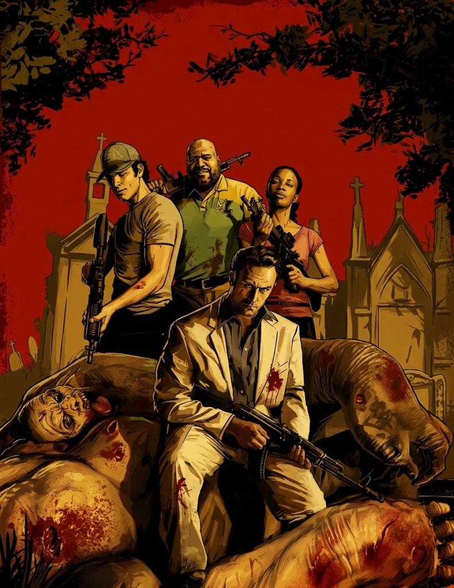
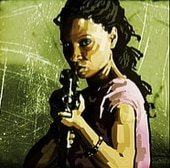

Los Supervivientes
En el universo de Left 4 Dead 2, los "supervivientes" son un grupo de cuatro individuos que comparten una característica vital: son portadores asintomáticos de la Gripe Verde. Esto significa que están infectados con el virus y pueden transmitirlo, pero son completamente inmunes a sus efectos mutagénicos y no se convierten en zombis. Obligados a cooperar tras ser abandonados por las fuerzas de evacuación de la CEDA en Savannah, Georgia, este variopinto grupo debe atravesar el sur de Estados Unidos luchando por sus vidas.

Coach
Historia: Antes de que la infección arrasara con el país, Coach era un maestro de educación física y coordinador defensivo en una escuela secundaria en Savannah. Su sueño siempre fue ser entrenador de fútbol americano profesional, pero una lesión en la rodilla frustró su carrera en su juventud. De los cuatro, actúa a menudo como la brújula moral, el líder natural y el motivador del equipo. Su optimismo y su gran apetito lo ayudan a mantener la cordura en medio del apocalipsis.
Aspecto Físico: Es un hombre afroamericano de 44 años, de gran estatura y complexión robusta. Viste los colores de su amada escuela: una camisa tipo polo en tonos amarillo y morado, pantalones deportivos oscuros, tenis de gimnasia y un par de guantes sin dedos que le brindan un mejor agarre para las armas.

| Curiosidades: Coach | Detalle |
|---|---|
| Nombre Real | Su nombre real nunca se menciona en el juego. Todos, incluso él mismo, se refieren a él estrictamente como "Coach" (Entrenador). |
| Franquicia Favorita | Es un fanático acérrimo de Burger Tank y a menudo bromea con querer detenerse a comer en medio de las campañas. |
Ellis
Historia: Ellis es un joven e ingenuo mecánico nacido y criado en Savannah. Lejos de estar aterrorizado por el apocalipsis zombi, parece encontrarlo como una aventura emocionante. Es increíblemente parlanchín y tiene la costumbre de interrumpir momentos de tensión absoluta para contar historias largas, absurdas y casi siempre peligrosas sobre su mejor amigo, "Keith". A pesar de su actitud infantil y despreocupada, es extremadamente valiente y leal al grupo.
Aspecto Físico: Es un chico caucásico de 23 años. Su vestimenta es la de un mecánico de clase trabajadora: lleva una camiseta amarilla con el logo del taller "Bull Shifters", la parte superior de su overol azul amarrada a la cintura y una característica gorra de camionero de color blanco y azul.

| Curiosidades: Ellis | Detalle |
|---|---|
| El Ídolo Motorizado | Es un gran fanático del legendario piloto de carreras ficticio, Jimmy Gibbs Jr., y se emociona profundamente en la campaña Dead Center al encontrar su auto de exhibición. |
| Amor a primera vista | En la campaña "The Passing" (Defunción), Ellis se enamora perdidamente de Zoey, la superviviente del primer juego. |
Nick
Historia: Nick es un estafador, apostador compulsivo y un nómada cínico. Llegó a Savannah buscando casinos ilegales y partidas de póker fáciles, pero se encontró con la Gripe Verde. Al principio, Nick es pesimista, sarcástico y sumamente desconfiado, viendo a los demás supervivientes como una carga. Sin embargo, a medida que avanzan las campañas, su actitud se suaviza, demostrando que en el fondo se preocupa por sus compañeros, aunque intente ocultarlo bajo su áspera personalidad.
Aspecto Físico: De aproximadamente 35 años, Nick es un hombre caucásico que destaca visualmente por estar completamente fuera de lugar en un apocalipsis: viste un carísimo traje blanco hecho a medida, una camisa de vestir azul marino y zapatos finos. Lleva un par de anillos caros, sugiriendo su trasfondo en el mundo de las apuestas.

| Curiosidades: Nick | Detalle |
|---|---|
| Pasado Misterioso | Las líneas de diálogo sugieren fuertemente que Nick tiene vínculos con la mafia o el crimen organizado, e incluso se asusta cuando pasan cerca de una prisión. |
| El Traje | A medida que avanza cada campaña, el traje inmaculado de Nick se cubre visiblemente de sangre y suciedad, reflejando el progreso del juego. |
Rochelle
Historia: Originaria de Cleveland, Rochelle es una productora asociada de bajo nivel para una cadena de noticias por cable. Fue enviada a Savannah para cubrir la respuesta y los centros de evacuación de la CEDA en la ciudad. Durante un reportaje, el caos estalló y se vio obligada a huir. Rochelle actúa como la "hermana mayor" del grupo; es compasiva, inteligente y trata de mantener la moral alta cuando los ánimos de los hombres decaen. Su sentido del humor es a menudo seco pero afectuoso.
Aspecto Físico: Es una mujer afroamericana de 29 años. Viste ropa cómoda y casual: una camiseta de color rosa claro con el logotipo de la icónica banda musical Depeche Mode, unos pantalones de mezclilla desgastados y botas. Lleva pulseras y un aro en la oreja izquierda.

| Curiosidades: Rochelle | Detalle |
|---|---|
| Depeche Mode | Valve se puso en contacto con la banda británica Depeche Mode, a quienes les encantó el primer juego, y permitieron usar su logo gratuitamente en la camiseta de Rochelle. |
| Diálogos Eliminados | Debido a limitaciones de tiempo y grabaciones, Rochelle es el personaje que cuenta con menos líneas de diálogo e historias personales respecto al resto del grupo. |